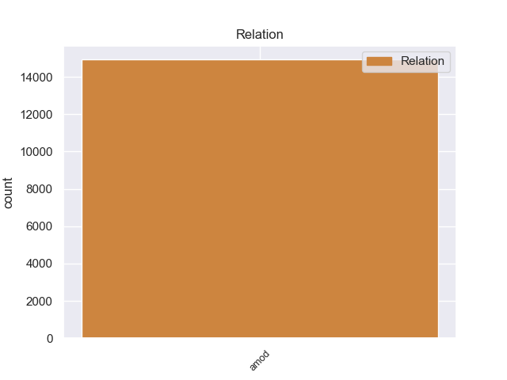
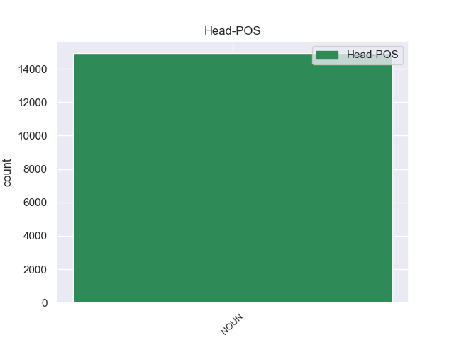
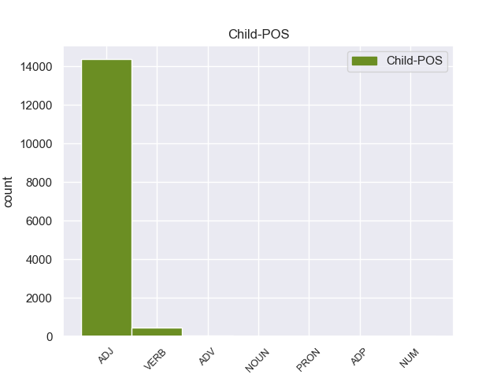

Distribution of features within this leaf



Agreement Rules sorted by frequency.
- When the dependent token is the adjectival modifier(amod) of the head token, and the head token is NOUN
1 लैब _ _ _ _ 0 _ _ _
2 रिपोर्ट _ _ _ _ 0 _ _ _
3 आने _ _ _ _ 0 _ _ _
4 के _ _ _ _ 0 _ _ _
5 बाद _ _ _ _ 0 _ _ _
6 राज्य _ _ _ _ 0 _ _ _
7 पुलिस _ _ _ _ 0 _ _ _
8 ने _ _ _ _ 0 _ _ _
9 आज _ _ _ _ 0 _ _ _
10 एक _ _ _ _ 0 _ _ _
11 उच्चस्तरीय उच्चस्तरीय ADJ JJ Case=Nom 12 amod _ ChunkId=NP4|ChunkType=child|Translit=uccastarīya
12 बैठक बैठक NOUN NN Case=Nom|Gender=Fem|Number=Sing|Person=3 0 _ _ _
13 की _ _ _ _ 0 _ _ _
14 और _ _ _ _ 0 _ _ _
15 मामले _ _ _ _ 0 _ _ _
16 में _ _ _ _ 0 _ _ _
17 आगे _ _ _ _ 0 _ _ _
18 की _ _ _ _ 0 _ _ _
19 कार्रवाई _ _ _ _ 0 _ _ _
20 की _ _ _ _ 0 _ _ _
21 रणनीति _ _ _ _ 0 _ _ _
22 तय _ _ _ _ 0 _ _ _
23 की _ _ _ _ 0 _ _ _
24 । _ _ _ _ 0 _ _ _
Disagree Examples:
1 दूसरा _ _ _ _ 0 _ _ _
2 अहंकार _ _ _ _ 0 _ _ _
3 , _ _ _ _ 0 _ _ _
4 तीसरापरमाणु _ _ _ _ 0 _ _ _
5 , _ _ _ _ 0 _ _ _
6 चौथा _ _ _ _ 0 _ _ _
7 जगत् _ _ _ _ 0 _ _ _
8 होता _ _ _ _ 0 _ _ _
9 है _ _ _ _ 0 _ _ _
10 . _ _ _ _ 0 _ _ _
11 वैकारिक _ _ _ _ 0 _ _ _
12 सर्ग _ _ _ _ 0 _ _ _
13 में _ _ _ _ 0 _ _ _
14 जो _ _ _ _ 0 _ _ _
15 कुछ _ _ _ _ 0 _ _ _
16 है _ _ _ _ 0 _ _ _
17 , _ _ _ _ 0 _ _ _
18 उसका _ _ _ _ 0 _ _ _
19 मूल _ _ _ _ 0 _ _ _
20 स्थूल _ _ _ _ 0 _ _ _
21 - _ _ _ _ 0 _ _ _
22 भूतहै _ _ _ _ 0 _ _ _
23 , _ _ _ _ 0 _ _ _
24 और _ _ _ _ 0 _ _ _
25 स्थूल _ _ _ _ 0 _ _ _
26 - _ _ _ _ 0 _ _ _
27 भूत _ _ _ _ 0 _ _ _
28 का _ _ _ _ 0 _ _ _
29 मूल _ _ _ _ 0 _ _ _
30 सूक्ष्म _ _ _ _ 0 _ _ _
31 - _ _ _ _ 0 _ _ _
32 भूत _ _ _ _ 0 _ _ _
33 है _ _ _ _ 0 _ _ _
34 . _ _ _ _ 0 _ _ _
35 सूक्ष्म _ _ _ _ 0 _ _ _
36 - _ _ _ _ 0 _ _ _
37 भूत _ _ _ _ 0 _ _ _
38 का _ _ _ _ 0 _ _ _
39 मूल _ _ _ _ 0 _ _ _
40 अहं _ _ _ _ 0 _ _ _
41 - _ _ _ _ 0 _ _ _
42 तत्त्वहै _ _ _ _ 0 _ _ _
43 , _ _ _ _ 0 _ _ _
44 अहं _ _ _ _ 0 _ _ _
45 - _ _ _ _ 0 _ _ _
46 तत्व _ _ _ _ 0 _ _ _
47 का _ _ _ _ 0 _ _ _
48 महत्तत्व _ _ _ _ 0 _ _ _
49 और _ _ _ _ 0 _ _ _
50 महत्तत्त्व _ _ _ _ 0 _ _ _
51 का _ _ _ _ 0 _ _ _
52 मूल _ _ _ _ 0 _ _ _
53 वही _ _ _ _ 0 _ _ _
54 प्रकृति _ _ _ _ 0 _ _ _
55 है _ _ _ _ 0 _ _ _
56 . _ _ _ _ 0 _ _ _
57 इस _ _ _ _ 0 _ _ _
58 प्रकारजगत् _ _ _ _ 0 _ _ _
59 की _ _ _ _ 0 _ _ _
60 अव्यक्त अव्यक्त ADJ JJ Case=Nom 62 amod _ _
61 अवस्था _ _ _ _ 0 _ _ _
62 प्रकृति प्रकृति NOUN NN Case=Acc|Gender=Fem|Number=Sing|Person=3 0 _ _ _
63 और _ _ _ _ 0 _ _ _
64 प्रकृति _ _ _ _ 0 _ _ _
65 की _ _ _ _ 0 _ _ _
66 व्यक्तावस्था _ _ _ _ 0 _ _ _
67 जगत् _ _ _ _ 0 _ _ _
68 हैं _ _ _ _ 0 _ _ _
69 . _ _ _ _ 0 _ _ _
70 एक _ _ _ _ 0 _ _ _
71 - _ _ _ _ 0 _ _ _
72 एकतत्त्व _ _ _ _ 0 _ _ _
73 को _ _ _ _ 0 _ _ _
74 जानने _ _ _ _ 0 _ _ _
75 के _ _ _ _ 0 _ _ _
76 जानने _ _ _ _ 0 _ _ _
77 के _ _ _ _ 0 _ _ _
78 लिए _ _ _ _ 0 _ _ _
79 मनुष्य _ _ _ _ 0 _ _ _
80 - _ _ _ _ 0 _ _ _
81 शरीर _ _ _ _ 0 _ _ _
82 में _ _ _ _ 0 _ _ _
83 एक _ _ _ _ 0 _ _ _
84 - _ _ _ _ 0 _ _ _
85 एक _ _ _ _ 0 _ _ _
86 स्वतन्त्र _ _ _ _ 0 _ _ _
87 इंद्रिय _ _ _ _ 0 _ _ _
88 है _ _ _ _ 0 _ _ _
89 . _ _ _ _ 0 _ _ _
90 तत्वों _ _ _ _ 0 _ _ _
91 के _ _ _ _ 0 _ _ _
92 संयोग _ _ _ _ 0 _ _ _
93 से _ _ _ _ 0 _ _ _
94 इंद्रियों _ _ _ _ 0 _ _ _
95 में _ _ _ _ 0 _ _ _
96 जो _ _ _ _ 0 _ _ _
97 विशेष _ _ _ _ 0 _ _ _
98 - _ _ _ _ 0 _ _ _
99 विशेष _ _ _ _ 0 _ _ _
100 स्पंदन _ _ _ _ 0 _ _ _
101 उत्पन्न _ _ _ _ 0 _ _ _
102 होते _ _ _ _ 0 _ _ _
103 हैं _ _ _ _ 0 _ _ _
104 , _ _ _ _ 0 _ _ _
105 वे _ _ _ _ 0 _ _ _
106 ही _ _ _ _ 0 _ _ _
107 क्रमशः _ _ _ _ 0 _ _ _
108 शब्द _ _ _ _ 0 _ _ _
109 , _ _ _ _ 0 _ _ _
110 स्पर्श _ _ _ _ 0 _ _ _
111 , _ _ _ _ 0 _ _ _
112 रूप _ _ _ _ 0 _ _ _
113 , _ _ _ _ 0 _ _ _
114 रस _ _ _ _ 0 _ _ _
115 और _ _ _ _ 0 _ _ _
116 गंध _ _ _ _ 0 _ _ _
117 कहाते _ _ _ _ 0 _ _ _
118 हैं _ _ _ _ 0 _ _ _
119 . _ _ _ _ 0 _ _ _
1 इसी _ _ _ _ 0 _ _ _
2 मनुष्य _ _ _ _ 0 _ _ _
3 को _ _ _ _ 0 _ _ _
4 मैं _ _ _ _ 0 _ _ _
5 बचपन _ _ _ _ 0 _ _ _
6 से _ _ _ _ 0 _ _ _
7 चाहते _ _ _ _ 0 _ _ _
8 आ _ _ _ _ 0 _ _ _
9 रहा _ _ _ _ 0 _ _ _
10 हूँ _ _ _ _ 0 _ _ _
11 . _ _ _ _ 0 _ _ _
12 साथ _ _ _ _ 0 _ _ _
13 ही _ _ _ _ 0 _ _ _
14 स्वयं _ _ _ _ 0 _ _ _
15 को _ _ _ _ 0 _ _ _
16 भी _ _ _ _ 0 _ _ _
17 मैंने _ _ _ _ 0 _ _ _
18 चाहाहै _ _ _ _ 0 _ _ _
19 . _ _ _ _ 0 _ _ _
20 इसलिये _ _ _ _ 0 _ _ _
21 उसके _ _ _ _ 0 _ _ _
22 यश _ _ _ _ 0 _ _ _
23 या _ _ _ _ 0 _ _ _
24 अपयश _ _ _ _ 0 _ _ _
25 की _ _ _ _ 0 _ _ _
26 कहानी _ _ _ _ 0 _ _ _
27 मैं _ _ _ _ 0 _ _ _
28 किसी _ _ _ _ 0 _ _ _
29 के _ _ _ _ 0 _ _ _
30 आगे _ _ _ _ 0 _ _ _
31 बखानते _ _ _ _ 0 _ _ _
32 वक्त _ _ _ _ 0 _ _ _
33 स्वयंके _ _ _ _ 0 _ _ _
34 भीतर _ _ _ _ 0 _ _ _
35 प्रेरणा _ _ _ _ 0 _ _ _
36 पाता _ _ _ _ 0 _ _ _
37 हूँ _ _ _ _ 0 _ _ _
38 . _ _ _ _ 0 _ _ _
39 मनुष्य _ _ _ _ 0 _ _ _
40 ही _ _ _ _ 0 _ _ _
41 तो _ _ _ _ 0 _ _ _
42 सुनना _ _ _ _ 0 _ _ _
43 चाहता _ _ _ _ 0 _ _ _
44 है _ _ _ _ 0 _ _ _
45 अन्य अन्य ADJ JJ Case=Acc 46 amod _ _
46 मनुष्य मनुष्य NOUN NN Case=Nom|Gender=Masc|Number=Sing|Person=3 0 _ _ _
47 कीकहानी _ _ _ _ 0 _ _ _
48 ! _ _ _ _ 0 _ _ _
1 प्रश्नोत्तर _ _ _ _ 0 _ _ _
2 का _ _ _ _ 0 _ _ _
3 कार्यक्रम _ _ _ _ 0 _ _ _
4 अन्य _ _ _ _ 0 _ _ _
5 क्षेत्रों _ _ _ _ 0 _ _ _
6 में _ _ _ _ 0 _ _ _
7 विवाह _ _ _ _ 0 _ _ _
8 के _ _ _ _ 0 _ _ _
9 मध्य _ _ _ _ 0 _ _ _
10 किसी _ _ _ _ 0 _ _ _
11 भीसमय _ _ _ _ 0 _ _ _
12 प्रचलित _ _ _ _ 0 _ _ _
13 मिलता _ _ _ _ 0 _ _ _
14 है _ _ _ _ 0 _ _ _
15 . _ _ _ _ 0 _ _ _
16 किन्नौर _ _ _ _ 0 _ _ _
17 में _ _ _ _ 0 _ _ _
18 ह _ _ _ _ 0 _ _ _
19 र _ _ _ _ 0 _ _ _
20 अ _ _ _ _ 0 _ _ _
21 क्षेत्र _ _ _ _ 0 _ _ _
22 में _ _ _ _ 0 _ _ _
23 भी _ _ _ _ 0 _ _ _
24 भोटी _ _ _ _ 0 _ _ _
25 भाषा भाषा ADJ JJC Case=Nom|Gender=Fem|Number=Sing|Person=3 27 amod _ _
26 मेंइसी _ _ _ _ 0 _ _ _
27 प्रकार प्रकार NOUN NN Case=Acc|Gender=Masc|Number=Sing|Person=3 0 _ _ _
28 के _ _ _ _ 0 _ _ _
29 प्रश्नोत्तर _ _ _ _ 0 _ _ _
30 का _ _ _ _ 0 _ _ _
31 रिवाज _ _ _ _ 0 _ _ _
32 है _ _ _ _ 0 _ _ _
33 . _ _ _ _ 0 _ _ _
34 गाडर _ _ _ _ 0 _ _ _
35 प्रकार _ _ _ _ 0 _ _ _
36 के _ _ _ _ 0 _ _ _
37 विवाह _ _ _ _ 0 _ _ _
38 में _ _ _ _ 0 _ _ _
39 वधू _ _ _ _ 0 _ _ _
40 केघर _ _ _ _ 0 _ _ _
41 उसे _ _ _ _ 0 _ _ _
42 वर _ _ _ _ 0 _ _ _
43 - _ _ _ _ 0 _ _ _
44 पक्ष _ _ _ _ 0 _ _ _
45 की _ _ _ _ 0 _ _ _
46 ओर _ _ _ _ 0 _ _ _
47 से _ _ _ _ 0 _ _ _
48 निमन्त्रण _ _ _ _ 0 _ _ _
49 मिलने _ _ _ _ 0 _ _ _
50 पर _ _ _ _ 0 _ _ _
51 बड़े _ _ _ _ 0 _ _ _
52 भाई _ _ _ _ 0 _ _ _
53 तथा _ _ _ _ 0 _ _ _
54 अन्य _ _ _ _ 0 _ _ _
55 सम्बंधियोंके _ _ _ _ 0 _ _ _
56 साथ _ _ _ _ 0 _ _ _
57 जाती _ _ _ _ 0 _ _ _
58 है _ _ _ _ 0 _ _ _
59 . _ _ _ _ 0 _ _ _
60 इस _ _ _ _ 0 _ _ _
61 प्रथा _ _ _ _ 0 _ _ _
62 के _ _ _ _ 0 _ _ _
63 अन्त _ _ _ _ 0 _ _ _
64 - _ _ _ _ 0 _ _ _
65 र्गत _ _ _ _ 0 _ _ _
66 वर _ _ _ _ 0 _ _ _
67 के _ _ _ _ 0 _ _ _
68 घर _ _ _ _ 0 _ _ _
69 वेदिका _ _ _ _ 0 _ _ _
70 आदि _ _ _ _ 0 _ _ _
71 के _ _ _ _ 0 _ _ _
72 कार्य _ _ _ _ 0 _ _ _
73 वधू _ _ _ _ 0 _ _ _
74 केपहुंचने _ _ _ _ 0 _ _ _
75 के _ _ _ _ 0 _ _ _
76 बाद _ _ _ _ 0 _ _ _
77 सम्पन्न _ _ _ _ 0 _ _ _
78 होते _ _ _ _ 0 _ _ _
79 हैं _ _ _ _ 0 _ _ _
80 . _ _ _ _ 0 _ _ _
81 परैणों _ _ _ _ 0 _ _ _
82 में _ _ _ _ 0 _ _ _
83 वधू _ _ _ _ 0 _ _ _
84 के _ _ _ _ 0 _ _ _
85 साथ _ _ _ _ 0 _ _ _
86 जाने _ _ _ _ 0 _ _ _
87 वाले _ _ _ _ 0 _ _ _
88 बरातीलगभग _ _ _ _ 0 _ _ _
89 ५० _ _ _ _ 0 _ _ _
90 होते _ _ _ _ 0 _ _ _
91 हैं _ _ _ _ 0 _ _ _
92 . _ _ _ _ 0 _ _ _
93 गाडर _ _ _ _ 0 _ _ _
94 अथवा _ _ _ _ 0 _ _ _
95 परैणो _ _ _ _ 0 _ _ _
96 में _ _ _ _ 0 _ _ _
97 टीका _ _ _ _ 0 _ _ _
98 आदि _ _ _ _ 0 _ _ _
99 के _ _ _ _ 0 _ _ _
100 रिवाज _ _ _ _ 0 _ _ _
101 ` _ _ _ _ 0 _ _ _
102 बैआ _ _ _ _ 0 _ _ _
103 ' _ _ _ _ 0 _ _ _
104 ( _ _ _ _ 0 _ _ _
105 विवाह _ _ _ _ 0 _ _ _
106 ) _ _ _ _ 0 _ _ _
107 की _ _ _ _ 0 _ _ _
108 तरह _ _ _ _ 0 _ _ _
109 ही _ _ _ _ 0 _ _ _
110 होते _ _ _ _ 0 _ _ _
111 हैं _ _ _ _ 0 _ _ _
112 . _ _ _ _ 0 _ _ _
113 गाडर _ _ _ _ 0 _ _ _
114 प्रकार _ _ _ _ 0 _ _ _
115 के _ _ _ _ 0 _ _ _
116 विवाह _ _ _ _ 0 _ _ _
117 अभी _ _ _ _ 0 _ _ _
118 भी _ _ _ _ 0 _ _ _
119 प्रचलित _ _ _ _ 0 _ _ _
120 हैं _ _ _ _ 0 _ _ _
121 . _ _ _ _ 0 _ _ _
1 प्रश्नोत्तर _ _ _ _ 0 _ _ _
2 का _ _ _ _ 0 _ _ _
3 कार्यक्रम _ _ _ _ 0 _ _ _
4 अन्य _ _ _ _ 0 _ _ _
5 क्षेत्रों _ _ _ _ 0 _ _ _
6 में _ _ _ _ 0 _ _ _
7 विवाह _ _ _ _ 0 _ _ _
8 के _ _ _ _ 0 _ _ _
9 मध्य _ _ _ _ 0 _ _ _
10 किसी _ _ _ _ 0 _ _ _
11 भीसमय _ _ _ _ 0 _ _ _
12 प्रचलित _ _ _ _ 0 _ _ _
13 मिलता _ _ _ _ 0 _ _ _
14 है _ _ _ _ 0 _ _ _
15 . _ _ _ _ 0 _ _ _
16 किन्नौर _ _ _ _ 0 _ _ _
17 में _ _ _ _ 0 _ _ _
18 ह _ _ _ _ 0 _ _ _
19 र _ _ _ _ 0 _ _ _
20 अ _ _ _ _ 0 _ _ _
21 क्षेत्र _ _ _ _ 0 _ _ _
22 में _ _ _ _ 0 _ _ _
23 भी _ _ _ _ 0 _ _ _
24 भोटी _ _ _ _ 0 _ _ _
25 भाषा _ _ _ _ 0 _ _ _
26 मेंइसी _ _ _ _ 0 _ _ _
27 प्रकार _ _ _ _ 0 _ _ _
28 के _ _ _ _ 0 _ _ _
29 प्रश्नोत्तर _ _ _ _ 0 _ _ _
30 का _ _ _ _ 0 _ _ _
31 रिवाज _ _ _ _ 0 _ _ _
32 है _ _ _ _ 0 _ _ _
33 . _ _ _ _ 0 _ _ _
34 गाडर _ _ _ _ 0 _ _ _
35 प्रकार _ _ _ _ 0 _ _ _
36 के _ _ _ _ 0 _ _ _
37 विवाह _ _ _ _ 0 _ _ _
38 में _ _ _ _ 0 _ _ _
39 वधू _ _ _ _ 0 _ _ _
40 केघर _ _ _ _ 0 _ _ _
41 उसे _ _ _ _ 0 _ _ _
42 वर _ _ _ _ 0 _ _ _
43 - _ _ _ _ 0 _ _ _
44 पक्ष _ _ _ _ 0 _ _ _
45 की _ _ _ _ 0 _ _ _
46 ओर _ _ _ _ 0 _ _ _
47 से _ _ _ _ 0 _ _ _
48 निमन्त्रण _ _ _ _ 0 _ _ _
49 मिलने _ _ _ _ 0 _ _ _
50 पर _ _ _ _ 0 _ _ _
51 बड़े _ _ _ _ 0 _ _ _
52 भाई _ _ _ _ 0 _ _ _
53 तथा _ _ _ _ 0 _ _ _
54 अन्य अन्य ADJ JJ Case=Acc 55 amod _ _
55 सम्बंधियोंके सम्बंधियोंका NOUN NN Case=Nom|Gender=Masc|Number=Plur|Person=3 0 _ _ _
56 साथ _ _ _ _ 0 _ _ _
57 जाती _ _ _ _ 0 _ _ _
58 है _ _ _ _ 0 _ _ _
59 . _ _ _ _ 0 _ _ _
60 इस _ _ _ _ 0 _ _ _
61 प्रथा _ _ _ _ 0 _ _ _
62 के _ _ _ _ 0 _ _ _
63 अन्त _ _ _ _ 0 _ _ _
64 - _ _ _ _ 0 _ _ _
65 र्गत _ _ _ _ 0 _ _ _
66 वर _ _ _ _ 0 _ _ _
67 के _ _ _ _ 0 _ _ _
68 घर _ _ _ _ 0 _ _ _
69 वेदिका _ _ _ _ 0 _ _ _
70 आदि _ _ _ _ 0 _ _ _
71 के _ _ _ _ 0 _ _ _
72 कार्य _ _ _ _ 0 _ _ _
73 वधू _ _ _ _ 0 _ _ _
74 केपहुंचने _ _ _ _ 0 _ _ _
75 के _ _ _ _ 0 _ _ _
76 बाद _ _ _ _ 0 _ _ _
77 सम्पन्न _ _ _ _ 0 _ _ _
78 होते _ _ _ _ 0 _ _ _
79 हैं _ _ _ _ 0 _ _ _
80 . _ _ _ _ 0 _ _ _
81 परैणों _ _ _ _ 0 _ _ _
82 में _ _ _ _ 0 _ _ _
83 वधू _ _ _ _ 0 _ _ _
84 के _ _ _ _ 0 _ _ _
85 साथ _ _ _ _ 0 _ _ _
86 जाने _ _ _ _ 0 _ _ _
87 वाले _ _ _ _ 0 _ _ _
88 बरातीलगभग _ _ _ _ 0 _ _ _
89 ५० _ _ _ _ 0 _ _ _
90 होते _ _ _ _ 0 _ _ _
91 हैं _ _ _ _ 0 _ _ _
92 . _ _ _ _ 0 _ _ _
93 गाडर _ _ _ _ 0 _ _ _
94 अथवा _ _ _ _ 0 _ _ _
95 परैणो _ _ _ _ 0 _ _ _
96 में _ _ _ _ 0 _ _ _
97 टीका _ _ _ _ 0 _ _ _
98 आदि _ _ _ _ 0 _ _ _
99 के _ _ _ _ 0 _ _ _
100 रिवाज _ _ _ _ 0 _ _ _
101 ` _ _ _ _ 0 _ _ _
102 बैआ _ _ _ _ 0 _ _ _
103 ' _ _ _ _ 0 _ _ _
104 ( _ _ _ _ 0 _ _ _
105 विवाह _ _ _ _ 0 _ _ _
106 ) _ _ _ _ 0 _ _ _
107 की _ _ _ _ 0 _ _ _
108 तरह _ _ _ _ 0 _ _ _
109 ही _ _ _ _ 0 _ _ _
110 होते _ _ _ _ 0 _ _ _
111 हैं _ _ _ _ 0 _ _ _
112 . _ _ _ _ 0 _ _ _
113 गाडर _ _ _ _ 0 _ _ _
114 प्रकार _ _ _ _ 0 _ _ _
115 के _ _ _ _ 0 _ _ _
116 विवाह _ _ _ _ 0 _ _ _
117 अभी _ _ _ _ 0 _ _ _
118 भी _ _ _ _ 0 _ _ _
119 प्रचलित _ _ _ _ 0 _ _ _
120 हैं _ _ _ _ 0 _ _ _
121 . _ _ _ _ 0 _ _ _
1 प्रश्नोत्तर _ _ _ _ 0 _ _ _
2 का _ _ _ _ 0 _ _ _
3 कार्यक्रम _ _ _ _ 0 _ _ _
4 अन्य _ _ _ _ 0 _ _ _
5 क्षेत्रों _ _ _ _ 0 _ _ _
6 में _ _ _ _ 0 _ _ _
7 विवाह _ _ _ _ 0 _ _ _
8 के _ _ _ _ 0 _ _ _
9 मध्य _ _ _ _ 0 _ _ _
10 किसी _ _ _ _ 0 _ _ _
11 भीसमय _ _ _ _ 0 _ _ _
12 प्रचलित _ _ _ _ 0 _ _ _
13 मिलता _ _ _ _ 0 _ _ _
14 है _ _ _ _ 0 _ _ _
15 . _ _ _ _ 0 _ _ _
16 किन्नौर _ _ _ _ 0 _ _ _
17 में _ _ _ _ 0 _ _ _
18 ह _ _ _ _ 0 _ _ _
19 र _ _ _ _ 0 _ _ _
20 अ _ _ _ _ 0 _ _ _
21 क्षेत्र _ _ _ _ 0 _ _ _
22 में _ _ _ _ 0 _ _ _
23 भी _ _ _ _ 0 _ _ _
24 भोटी _ _ _ _ 0 _ _ _
25 भाषा _ _ _ _ 0 _ _ _
26 मेंइसी _ _ _ _ 0 _ _ _
27 प्रकार _ _ _ _ 0 _ _ _
28 के _ _ _ _ 0 _ _ _
29 प्रश्नोत्तर _ _ _ _ 0 _ _ _
30 का _ _ _ _ 0 _ _ _
31 रिवाज _ _ _ _ 0 _ _ _
32 है _ _ _ _ 0 _ _ _
33 . _ _ _ _ 0 _ _ _
34 गाडर _ _ _ _ 0 _ _ _
35 प्रकार _ _ _ _ 0 _ _ _
36 के _ _ _ _ 0 _ _ _
37 विवाह _ _ _ _ 0 _ _ _
38 में _ _ _ _ 0 _ _ _
39 वधू _ _ _ _ 0 _ _ _
40 केघर _ _ _ _ 0 _ _ _
41 उसे _ _ _ _ 0 _ _ _
42 वर _ _ _ _ 0 _ _ _
43 - _ _ _ _ 0 _ _ _
44 पक्ष _ _ _ _ 0 _ _ _
45 की _ _ _ _ 0 _ _ _
46 ओर _ _ _ _ 0 _ _ _
47 से _ _ _ _ 0 _ _ _
48 निमन्त्रण _ _ _ _ 0 _ _ _
49 मिलने _ _ _ _ 0 _ _ _
50 पर _ _ _ _ 0 _ _ _
51 बड़े _ _ _ _ 0 _ _ _
52 भाई _ _ _ _ 0 _ _ _
53 तथा _ _ _ _ 0 _ _ _
54 अन्य _ _ _ _ 0 _ _ _
55 सम्बंधियोंके _ _ _ _ 0 _ _ _
56 साथ _ _ _ _ 0 _ _ _
57 जाती _ _ _ _ 0 _ _ _
58 है _ _ _ _ 0 _ _ _
59 . _ _ _ _ 0 _ _ _
60 इस _ _ _ _ 0 _ _ _
61 प्रथा _ _ _ _ 0 _ _ _
62 के _ _ _ _ 0 _ _ _
63 अन्त _ _ _ _ 0 _ _ _
64 - _ _ _ _ 0 _ _ _
65 र्गत _ _ _ _ 0 _ _ _
66 वर _ _ _ _ 0 _ _ _
67 के _ _ _ _ 0 _ _ _
68 घर _ _ _ _ 0 _ _ _
69 वेदिका _ _ _ _ 0 _ _ _
70 आदि _ _ _ _ 0 _ _ _
71 के _ _ _ _ 0 _ _ _
72 कार्य _ _ _ _ 0 _ _ _
73 वधू _ _ _ _ 0 _ _ _
74 केपहुंचने _ _ _ _ 0 _ _ _
75 के _ _ _ _ 0 _ _ _
76 बाद _ _ _ _ 0 _ _ _
77 सम्पन्न _ _ _ _ 0 _ _ _
78 होते _ _ _ _ 0 _ _ _
79 हैं _ _ _ _ 0 _ _ _
80 . _ _ _ _ 0 _ _ _
81 परैणों _ _ _ _ 0 _ _ _
82 में _ _ _ _ 0 _ _ _
83 वधू _ _ _ _ 0 _ _ _
84 के _ _ _ _ 0 _ _ _
85 साथ _ _ _ _ 0 _ _ _
86 जाने जा VERB VM Case=Acc|Number=Plur|VerbForm=Inf 93 amod _ _
87 वाले _ _ _ _ 0 _ _ _
88 बरातीलगभग _ _ _ _ 0 _ _ _
89 ५० _ _ _ _ 0 _ _ _
90 होते _ _ _ _ 0 _ _ _
91 हैं _ _ _ _ 0 _ _ _
92 . _ _ _ _ 0 _ _ _
93 गाडर गाडर NOUN NN Case=Nom|Gender=Masc|Number=Plur|Person=3 0 _ _ _
94 अथवा _ _ _ _ 0 _ _ _
95 परैणो _ _ _ _ 0 _ _ _
96 में _ _ _ _ 0 _ _ _
97 टीका _ _ _ _ 0 _ _ _
98 आदि _ _ _ _ 0 _ _ _
99 के _ _ _ _ 0 _ _ _
100 रिवाज _ _ _ _ 0 _ _ _
101 ` _ _ _ _ 0 _ _ _
102 बैआ _ _ _ _ 0 _ _ _
103 ' _ _ _ _ 0 _ _ _
104 ( _ _ _ _ 0 _ _ _
105 विवाह _ _ _ _ 0 _ _ _
106 ) _ _ _ _ 0 _ _ _
107 की _ _ _ _ 0 _ _ _
108 तरह _ _ _ _ 0 _ _ _
109 ही _ _ _ _ 0 _ _ _
110 होते _ _ _ _ 0 _ _ _
111 हैं _ _ _ _ 0 _ _ _
112 . _ _ _ _ 0 _ _ _
113 गाडर _ _ _ _ 0 _ _ _
114 प्रकार _ _ _ _ 0 _ _ _
115 के _ _ _ _ 0 _ _ _
116 विवाह _ _ _ _ 0 _ _ _
117 अभी _ _ _ _ 0 _ _ _
118 भी _ _ _ _ 0 _ _ _
119 प्रचलित _ _ _ _ 0 _ _ _
120 हैं _ _ _ _ 0 _ _ _
121 . _ _ _ _ 0 _ _ _